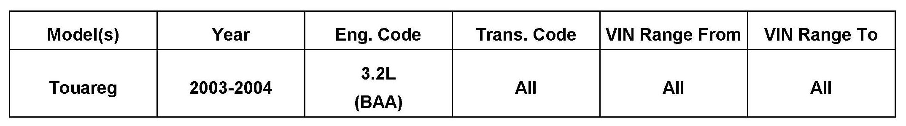
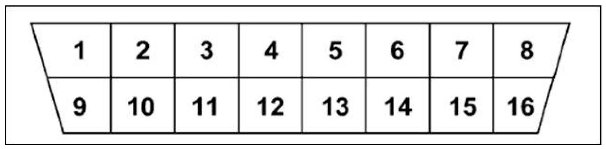
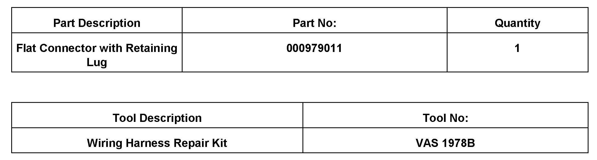

Computer/Control - No ECM Communication At Diagnostic Connectio
97 12 01October 9, 2012
2031104

Vehicle Information
Condition
Diagnostic Connector - No ECM Communication
Some model year 2003 - 2004 V6 Touaregs may exhibit a loss of communication through the OBD diagnostic connector.
Technical Background
The signal ground wire may be missing from pin 5 of the diagnostic connector.
Production Solution
Not Applicable

Service
Procedure
1. Disconnect battery.
2. Remove the under dash covers and loosen the diagnostic connector from under the dash panels.
3. Open approximately 200mm of the harness from behind the diagnostic connector.
4. Insert prefabricated ground terminal P/N 000979011 into position 5 of the diagnostic connector and splice together with the wire from position 4 approximately 15 - 20 cm from the diagnostic connector.
5. Verify continuity from pins 4 and 5 of the diagnostic connector to the body ground bolt on the A pillar.
6. Re-cover the section of harness opened for the repair.
7. Re-assemble diagnostic connector and under dash panels.
8. Reconnect battery.
9. Verify communication with tester.
Warranty
Information Only.

Required Parts and Tools
Additional Information
All part and service references provided in this Technical Bulletin are subject to change and/or removal.
Always check with your Parts Dept. and Repair Manuals for the latest information.